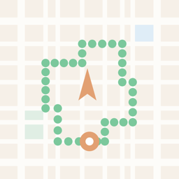

「ふらるーと」は、方角をえらぶだけで散歩の周回コースを自動生成するiOSアプリです。同じ道を往復するのではなく、ぐるっと一周して戻ってくるコースを提案します。
基本機能は無料です。買い切りの「ふらるーとPro」でルート生成と履歴が無制限になります（サブスクリプションはありません）。
不具合のご報告・ご要望・ご質問は、下記メールアドレスまでお気軽にご連絡ください。
app.info.kn@gmail.com
よくある質問: